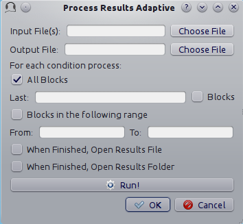

pychoacoustics manual¶
Version 0.2
Samuele Carcagno
Copyright ©2012–2013 Samuele Carcagno. Permission is granted to copy, distribute and/or modify this document under the terms of the GNU Free Documentation License, Version 1.2 or any later version published by the Free Software Foundation; with no Invariant Sections, no Front-Cover Texts, and no Back-Cover Texts. A copy of the license is included in the section entitled “GNU Free Documentation License”.
Disclaimer: This document comes with NO WARRANTY whatsoever of being correct in any of its parts. This document is work in progress.
[1]****
pychoacoustics manual
Version 0.2
Samuele Carcagno
<mailto:sam.carcagno@gmail.com>_
Copyright (c) 2012–2013 Samuele Carcagno. Permission is granted to copy, distribute and/or modify this document under the terms of the GNU Free Documentation License, Version 1.2 or any later version published by the Free Software Foundation; with no Invariant Sections, no Front-Cover Texts, and no Back-Cover Texts. A copy of the license is included in the section entitled “GNU Free Documentation License”.
Disclaimer: This document comes with NO WARRANTY whatsoever of being correct in any of its parts. This document is work in progress.
What is pychoacoustics?¶
pychoacoustics is a software for programming and running experiments in auditory psychophysics (psychoacoustics). The software contains a set of predefined experiments that can be immediately run after installation. Importantly pychoacoustics is designed to be extensible so that users can add new custom experiments with relative ease. Custom experiments are written in Python, a programming language renowned for its clarity and ease of use. The application is divided in two graphical windows a) the “response box”, shown in Figure The pychoacoustics response box, with which listeners interact during the experiment b) the control window, shown in Figure, that contains a series of widgets (choosers, text field and buttons) that are used by the experimenter to set all of the relevant experimental parameters, which can also be stored and later reloaded into the application.

The pychoacoustics response box
I started writing pychoacoustics for fun and for the sake of learning around 2008 while doing my PhD with Professor Chris Plack at Lancaster University. At that time we were using in the lab a MATLAB program called the “Earlab” written by Professor Plack. pychoacoustics has been greatly influenced and inspired by the “Earlab”, and it reproposes many of the same features that the “Earlab” provides. For this reason, as well as for the patience he had to teach me audio programming I am greatly indebted to Professor Plack.
Installation¶
pychoacoustics has been successfully installed and used on Linux and Windows platforms, since it is entirely written in python it should be fully cross-platform and should work on the Mac as well, but this has never been tested. pychoacoustics depends on the installation of a handful of other programs:
- Python (version 3) http://www.python.org/
- pyqt4 http://www.riverbankcomputing.co.uk/software/pyqt/download
- numpy http://sourceforge.net/projects/numpy/files/
- scipy http://sourceforge.net/projects/scipy/files/
these programs need to be installed manually. Once these programs are installed you can proceed with the installtion of pychoacoustics.
Installation on Linux¶
Binary deb packages for recent debian-based distributions are provided (starting from Wheezy), and can be installed using gdebi which automatically handles dependencies. For other linux systems, once all of the dependencies have been installed, pychoacoustics can be installed as a standard python package using
sudo python3 setup.py install
you can then invoke pychoacoustics from a terminal by typing the command
pychoacoustics.pyw
Installation on Windows¶
Using the binary installer¶
After installing the dependencies (python, pyqt4, numpy, and scipy), simply double click on the pychoacoustics windows installer to start the installation procedure. Currently the installer does not provide a launcher. There is, however, a file called pychoacoustics-qt4.bat inside the source distribution of pychoacoustics that after some modifications can be used as a launcher. The content of the file is the following:
C:\Python32\python "C:\Python32\site-packages\pychoacoustics.pyw"
%1 %2 %3 %4 %5 %6 %7 %8
The first statement C:\Python32\python is the path to the Python executable. The second statement is the path to the main file of the pychoacoustics app. You simply need to replace those two statements to reflect the Python installation on your system.
You can place the .bat launcher wherever you want, for example on your Desktop folder. Simply double click on it, and pychoacoustics should start.
Installing from source¶
After installing the dependencies, it is recommended to add the directory where the Python executable resides to the system PATH. In this way you can call python from a DOS shell by simply typing its name, rather than typing the full path to the Python executable.
By default python is installed in C:. The name of the Python directory depends on its version number, for example, if you installed Python version 3.2, the python directory will be C:\Python32. To add this directory to the system path go to My Computer and click Properties, then click Advanced System Settings. In the System Properties window click Environment Variables. There you will find an entry called Path. Select it and click Edit. Be careful not to remove any of the entries that are already written there because it could corrupt your system. Simply append the name of the full path of the folder where python is installed, at the end of the other entries.
To install pychoacoustics from source, unpack the pychoacoustics .zip file containing the source code. Open a DOS shell and cd to the directory where you unzipped pychoacoustics. The program can then be installed as a standard python package using the following command:
python setup.py install
If you have installed the dependencies, you can also use pychoacoustics without installing it. Open a DOS shell, cd to the directory where you unzipped pychoacoustics and launch it with the following command:
python pychoacoustics.pyw
As mentioned in the previous section, there is also a .bat launcher that can be used to launch pychoacoustics without needing to open a DOS shell each time. You can read the previous section for further info.
Graphical User Interface¶
The user interface is divided in two windows: the “Control Window” and the “Response Box”. The “Control Window” is used to set the experimental parameters, while the “Response Box” is the interface that the listeners use to give their responses.
Quickstart¶
When pychoacoustics is launched, the “Control Window” displays the default parameters for the “Audiogram” experiment. You can select another experiment using the “Experiment” drop-down menu, and edit any of the parameter fields you want to modify. Once you’re satisfied with the parameters, you can store them by pressing the “Store” button. This stores one experimental block with the chosen parameters. At this point you can either start running the experiment by pressing the “Start” button on the “Response Box”, or you can add more experimental blocks by clicking on the “New Block” button.
To save the parameters to a file click on the “Save Prm” button. Parameter files that have been saved in this way can be later loaded into the program by using the “Load Prm” button.
To save the results of your experiment to a file, click on the “Save Results” button. If you have forgotten to specify a results file in this way, pychoacoustics will save the results in a file called test.txt in the working directory.
The Control Window¶
The control window contains a set of widgets to manage the setup of the experiments, running the experiments, processing results files and managing application preferences. Some of the widgets are general, and some of them are specific either to a given paradigm (e.g. adaptive vs constant stimuli paradigm) or to a given experiment.
In the next section the function of these widgets will be explained, starting with the widgets that are general to all experiments and paradigms.
General Widgets (left panel)¶
[sec:gui:sub:leftpanel]
- Listener This is simply a label that you can use to identify the person who is running the experiment. This label will be written in the header of the results file.
- Experiment Label. This is a label to identify the experiment you are running. This label will be written in the header of the results file.
- Session This is a label to identify the experimental session, it can be a number or a string. This label will be written in the header of the results file.
- Condition Label This is a label to identify the experimental condition of the current block of trials. It is optional, but it may be useful when sorting the experimental results.
- End Command Here you can write an operating system command (e.g. a bash command on Unix systems or a DOS command on Windows systems) to be performed at the end of the experimental session. This could be used to run a custom script to analyse the result files, make a backup of the results files or other purposes. There are some variables that can be accessed with a special string, such as the name of the results file. These are listed in Section [sec:endcmd] Table [tab:endcmd]. Please, refer to that section for further info on how to use them.
- Shuffling Scheme By default when you click the “Shuffle” button, pychoacoustics randomly shuffles all blocks, here you can specify different shuffling schemes (e.g. shuffle the first four blocks among themselves and the last four blocks among themselves). Please refer to Section [sec:shuffling] for more details.
- Results File Select a file for saving the results. Selecting an existing file will never overwrite its content, it will simply append the new results to its content. If no file is selected, the results will be saved in a file called test.txt in the current working directory. You can select a file to save the results even after you have started a block of trials, the results get written to the file only at the end of the block.
- Experimenter Here you can select one of the experimenters listed in the experimenter database. Please refer to Section [sec:experimentersdialog] for further info on the experimenter database and how it can be used.
- Experiment Selects the experiment for the current block.
- Paradigm Selects the paradigm (e.g. adaptive, constant, etc…) for the current block. The list of paradigms available depends on the experiment that is selected.
- Phones Choose from one of the phone models stored in the phones database. Please, refer to Section [sec:phonesdialog] for further info on how to enter phones and calibration values in the database.
- Sample Rate (Hz) Set the sampling rate of the sounds to be played. Any value can be entered in the text fields. However, you should enter a value that is supported by your soundcard. A value that is not supported by your souncard may lead to issues, although it’s more likely that your soundcard will perform an automatic sample rate conversion.
- Bits Set the bit depth that pychoacoustics uses to store sounds to a wav file or play them. Currently values of 16 and 32 bits are supported. A value of 32 bits can be used for 24-bit soundcards. Notice that to achieve 24-bit output requires both a 24-bit souncard and a play command that can output 24-bit sounds. Therefore selecting a value of 32 bits here does not guarantee 24-bit playback even if you have a 24-bit souncard. Please, refere to Section [sec:soundoutput] for further information on this issue.
- Repetitions Set the number of times the sequence of blocks stored in memory should be repeated. If the “Shuffle Mode” (see below) is set to “auto”, each time a new repetition starts the block positions will be shuffled. If the “Shuffle Mode” is set to “Ask”, each time a new repetition starts the user will be asked if s/he wants to shuffle the block positions. The “Reset” button resets the number of repetitions to zero.
- Pre-Trial Silence (ms) Set a silent time interval before the start of each trial.
- Warning Interval Choose whether to present a warning light at the beginning of each trial.
- Warning Interval Duration (ms) Sets the duration of the warning interval light. This widget is shown only if the warning interval chooser is set to “Yes”.
- Warning Interval ISI (ms) Sets the duration of the silent interval between the end of warning interval and the start of the first observation interval. This widget is shown only if the warning interval chooser is set to “Yes”.
- Pre-Trial Interval Choose whether to present a pre-trial interval. This widget is shown only for experiments that have a pre-trial interval option.
- Pre-Trial Interval ISI (ms) Sets the duration of the silent interval between the end of pre-trial interval and the start of the first observation interval. This widget is shown only if the current experiment has a pre-trial interval option and the pre-trial interval chooser is set to “Yes”.
- Response Light Set the type of response light at the end of each trial. “Feedback” will flash a green (correct response) or red (incorrect response) light. “Neutral” will flash a white light. “None” will not flash any light (there will nonetheless be a silent interval equal to the response light duration, see below).
- Response Light Duration (ms) Set the duration of the response light.
- Shuffle Mode If the “Shuffle Mode” is “auto”, the block presentation positions will be automatically shuffled at the beginning of a series of blocks. If the “Shuffle Mode” is “Ask”, at the beginning of a series of blocks the user will be asked if the block presentation positions should be shuffled or not. If the “Shuffle Mode” is “No”, the block presentation positions will not be automatically shuffled at the beginning of a series of blocks. See Section [sec:shuffling] for further information on shuffling the block presentation positions.
- Response Mode When “Real Listener” is selected, pychoacoustics waits for responses from a human listener. When “Automatic” is selected the program will give responses by itself with a certain percentage correct, that can be specified in the “Percent Correct (%)” text field. This mode is mostly useful for debugging purposes, however it can also be used for experiments in which the participants are passively listening to the stimuli (e.g. some neuroimaging experiments that record cerebral responses rather than behavioural responses). In “Simulated Listener” mode pychoacoustics will give responses on the bases of an auditory model. This model needs to be specified in the experiment file, the “Simulated Listener” mode provides just a hook to redirect the control flow to your model. Please, refer to Section [sec:responsemode] for more information.
General Widgets (right panel)¶
- Load Prm Load in memory experimental parameters stored in a .prm file. See section [sec:parametersfiles] for more info.
- Save Prm Save experimental parameters stored in memory in a .prm file. See section [sec:parametersfiles] for more info.
- Delete Delete the current block from the blocks list.
- Undo Unsaved Reset the parameters in the current block to the parameters that were last saved.
- Store Store the parameters changes in memory.
- Store ’n’ add Store the parameter changes in memory and add a new parameters block.
- Store ’n’ go Store the parameter changes in memory and move to the next block storage point.
- New Block Create a new parameters block (the parameters of the current block will be copied in the new one).
- Previous Move to the previous block storage point.
- Next Move to the next block storage point.
- Shuffle Shuffle the block presentation positions.
- Reset Reset the block presentation positions and move to the first block position.
- Jump to Block Jump to a given block storage point.
- Previous Position Move to the previous block presentation position.
- Next Position Move to the next block presentation position.
- Jump to Position Jump to the given block presentation position.
- Shift Blk. Down Shift the current block to a lower storage point.
- Shift Blk. Up Shift the current block to a higher storage point.
Paradigm Widgets¶
Adaptive Paradigm Widgets¶
- Procedure If “Arithmetic” the quantity defined by the step size will be added or subtracted to the parameter that is adaptively changing. If “Geometric” the parameter that is adaptively changing will be multiplied or divided by the quantity defined by the step size.
- Initial Track Direction This determines when the first turpoint will be called. If the initial track direction is “Down” the first turnpoint will be called the first time the adaptive track turns upward. If the initial track direction is “Up” the first turnpoint will be called the first time the adaptive track turns downward.
- Rule Down Set the number of consecutive correct responses needed to subtract the current step size from the adaptive parameter (for arithmetic procedures) or divide the adaptive parameter by the current step size (for geometric procedures).
- Rule Up Set the number of consecutive incorrect responses needed to add the current step size to the adaptive parameter (for arithmetic procedures) or multiply the adaptive parameter by the current step size (for geometric procedures).
- Initial Turnpoints Set the number of initial turnpoints. The initial turnpoints serve to bring quickly the adaptive track towards the listener’s threshold. These turnpoints are not included in the threshold estimate.
- Total Turnpoints Set the number of total turnpoints. The number of total turnpoints is equal to the number of initial turnpoints that are not included in the threshold estimate plus the number of turnpoints that you want to use for the threshold estimate.
- Step Size 1 Set the step size for the initial turnpoints.
- Step Size 2 Set the step size to be used after the number of initial turnpoints has been reached.
Weighted Up/Down Paradigm Widgets¶
- Procedure If “Arithmetic” the quantity defined by the step size will be added or subtracted to the parameter that is adaptively changing. If “Geometric” the parameter that is adaptively changing will be multiplied or divided by the quantity defined by the step size.
- Initial Track Direction This determines when the first turpoint will be called. If the initial track direction is “Down” the first turnpoint will be called the first time the adaptive track turns upward. If the initial track direction is “Up” the first turnpoint will be called the first time the adaptive track turns downward.
- Percent Correct Tracked Set the percentage correct point on the psychometric function to be tracked by the adaptive procedure. The ratio of the “Up” and “Down” steps is automatically adjusted by the software to satisfy this criterion.
- Initial Turnpoints Set the number of initial turnpoints. The initial turnpoints serve to bring quickly the adaptive track towards the listener’s threshold. These turnpoints are not included in the threshold estimate.
- Total Turnpoints Set the number of total turnpoints. The number of total turnpoints is equal to the number of initial turnpoints that are not included in the threshold estimate plus the number of turnpoints that you want to use for the threshold estimate.
- Step Size 1 Set the “Down” step size for the initial turnpoints. The “Up” step size is automatically calculated to satisfy the “Percent Correct Tracked” criterion.
- Step Size 2 Set the “Down” step size to be used after the number of initial turnpoints has been reached. The “Up” step size is automatically calculated to satisfy the “Percent Correct Tracked” criterion.
Adaptive Interleaved Paradigm Widgets¶
- Procedure If “Arithmetic” the quantity defined by the step size will be added or subtracted to the parameter that is adaptively changing. If “Geometric” the parameter that is adaptively changing will be multiplied or divided by the quantity defined by the step size.
- No. Tracks Set the number of adaptive tracks.
- Max. Consecutive Trials x Track Set the maximum number of consecutive trials per track.
- Turnpoints to Average Since track selection is pseudo-random, it may happen that for a track the number of total turnpoints collected is greater than the number of total turnpoints requested for that track. If “All final step size (even)” is selected, the threshold will be estimated using all the turnpoints collected after the initial turnpoints, unless the number of these turnpoints is odd, in which case the first of these turnpoints will be discarded. If “First N final step size” is selected the threshold will be estimated using only the number of requested turnpoints collected after the initial turnpoints. If “Last N final step size” is selected the threshold will be estimated using only the last \(N\) turnpoints, where \(N\) equals the number of requested turnpoints.
- Initial Track X Direction This determines when the first turpoint will be called for track number \(X\). If the initial track direction is “Down” the first turnpoint will be called the first time the adaptive track turns upward. If the initial track direction is “Up” the first turnpoint will be called the first time the adaptive track turns downward.
- Rule Down Track X Set the number of consecutive correct responses needed to subtract the current step size from the adaptive parameter (for arithmetic procedures) or divide the adaptive parameter by the current step size (for geometric procedures) for track number \(X\).
- Rule Up Track X Set the number of consecutive incorrect responses needed to add the current step size to the adaptive parameter (for arithmetic procedures) or multiply the adaptive parameter by the current step size (for geometric procedures) for track number \(X\).
- Initial Turnpoints Track X Set the number of initial turnpoints for track number \(X\). The initial turnpoints serve to bring quickly the adaptive track towards the listener’s threshold. These turnpoints are not included in the threshold estimate.
- Total Turnpoints Track X Set the number of total turnpoints for track number \(X\). The number of total turnpoints is equal to the number of initial turnpoints that are not included in the threshold estimate plus the number of turnpoints that you want to use for the threshold estimate.
- Step Size 1 Track X Set the step size for the initial turnpoints for track number \(X\).
- Step Size 2 Track X Set the step size to be used after the number of initial turnpoints has been reached for track number \(X\).
Weighted Up/Down Interleaved Paradigm Widgets¶
- Procedure If “Arithmetic” the quantity defined by the step size will be added or subtracted to the parameter that is adaptively changing. If “Geometric” the parameter that is adaptively changing will be multiplied or divided by the quantity defined by the step size.
- No. Tracks Set the number of adaptive tracks.
- Max. Consecutive Trials x Track Set the maximum number of consecutive trials per track.
- Turnpoints to Average Since track selection is pseudo-random, it may happen that for a track the number of total turnpoints collected is greater than the number of total turnpoints requested for that track. If “All final step size (even)” is selected, the threshold will be estimated using all the turnpoints collected after the initial turnpoints, unless the number of these turnpoints is odd, in which case the first of these turnpoints will be discarded. If “First N final step size” is selected the threshold will be estimated using only the number of requested turnpoints collected after the initial turnpoints. If “Last N final step size” is selected the threshold will be estimated using only the last \(N\) turnpoints, where \(N\) equals the number of requested turnpoints.
- Initial Track X Direction This determines when the first turpoint will be called for track number \(X\). If the initial track direction is “Down” the first turnpoint will be called the first time the adaptive track turns upward. If the initial track direction is “Up” the first turnpoint will be called the first time the adaptive track turns downward.
- Percent Correct Tracked Set the percentage correct point on the psychometric function to be tracked by the adaptive procedure for track number \(X\). The ratio of the “Up” and “Down” steps is automatically adjusted by the software to satisfy this criterion.
- Initial Turnpoints Track X Set the number of initial turnpoints for track number \(X\). The initial turnpoints serve to bring quickly the adaptive track towards the listener’s threshold. These turnpoints are not included in the threshold estimate.
- Total Turnpoints Track X Set the number of total turnpoints for track number \(X\). The number of total turnpoints is equal to the number of initial turnpoints that are not included in the threshold estimate plus the number of turnpoints that you want to use for the threshold estimate.
- Step Size 1 Track X Set the “Down” step size for the initial turnpoints for track number \(X\). The “Up” step size is automatically calculated to satisfy the “Percent Correct Tracked” criterion.
- Step Size 2 Track X Set the “Down” step size to be used after the number of initial turnpoints has been reached for track number \(X\). The “Up” step size is automatically calculated to satisfy the “Percent Correct Tracked” criterion.
Constant m-Intervals n-Alternatives Paradigm Widgets¶
- No. Trials Set the number of trials to be presented in the current block.
- No. Practice Trials Set the number of practice trials to be presented in the current block. Practice trials are presented at the beginning of the block; the responses to these trials are not included in the statistics.
Multiple Constants m-Intervals n-Alternatives Paradigm Widgets¶
- No. Trials Set the number of trials to be presented in the current block for each condition.
- No. Practice Trials Set the number of practice trials to be presented in the current block for each condition. The responses to these trials are not included in the statistics.
- No. Differences Set the number of conditions to be used in the current block.
Constant 1-Interval 2-Alternatives Paradigm Widgets¶
- No. Trials Set the number of trials to be presented in the current block.
- No. Practice Trials Set the number of practice trials to be presented in the current block. Practice trials are presented at the beginning of the block; the responses to these trials are not included in the statistics.
Multiple Constants 1-Interval 2-Alternatives Paradigm Widgets¶
- No. Trials Set the number of trials to be presented in the current block for each condition.
- No. Practice Trials Set the number of practice trials to be presented in the current block for each condition. The responses to these trials are not included in the statistics.
- No. Differences Set the number of conditions to be used in the current block.
1-Pair Same/Different Paradigm Widgets¶
- No. Trials Set the number of trials to be presented in the current block.
- No. Practice Trials Set the number of practice trials to be presented in the current block. Practice trials are presented at the beginning of the block; the responses to these trials are not included in the statistics.
The Menu Bar¶
A screenshot of the menu bar is shown in Figure [fig:menuBar]. This bar is located in the upper left corner of the “Control Window”. Each menu will be described below.
[!h]  [fig:menuBar]
[fig:menuBar]
The “what’s this?” Button.¶
If you click on this button, and then click on a widget, you can get some information about the widget (this is not implemented for all widgets).
Process Results Dialog¶
[sec:proc:sub:resdia] Figure [fig:procresdia] show a screenshot of the process results dialog. The dialog is the same for all procedures, except that for procedures in which d’ is computed, there is an additional checkbox asking whether to apply a correction to hit/false alarm rates of zero or one. For information on the format of the result files, please see Section [sec:resultsfiles].
[!h]  [fig:proc:sub:resdia]
- Input File(s) Give the filepath of one or more files to be processed. The “Choose File” button can be used to select the file(s). Multiple filepaths should be separated by a semicolon “;”.
- Output File Give the filename of the output file.
- For each condition process:
- All Blocks If checked, all blocks in the result file(s) will be processd.
- Last X Blocks If checked, only the last \(X\) blocks will be processed.
- Blocks in the following range If checked, only blocks in the specified range will be processed (indexing starts from 1).
- d-prime correction If checked, convert hit rates of \(0\) and \(1\) to \(1/2N\) and \(1-1/(2N)\) respectively, where \(N\) is the number of trials, to avoid infinite values of d’ <see>[p. 8]Macmillan2005. This checkbox is available only for some paradigms.
- When finished, open results file If checked, the output file will be opened in the default text editor when processing has finished.
- When finished, open results folder If checked, the folder containing the output file will be opened when processing has finished.
- Run! Click this button to process the result files.
Edit Preferences Dialog¶
[sec:pref:sub:dialog] The preferences dialog is divided into several tabs. These are described in turn below.
General¶
[sec:pref:sub:dialoggen]
- Language (requires restart) Choose the application language. At the moment and for the foreseeable future only English is supported.
- Country (requires restart) Set the country locale to be used for the application. Some things (e.g. the way dates are written in result files depend on this setting.
- Response Box Language (requires restart) Choose the language to be used for the “Response Box”. This set the language to be used for the button labels and other GUI elements that the experimental listener is presented with.
- Response Box Country (requires restart) Set the country locale for the response box.
- csv separator Choose the separator field to be used when writing the csv tabular result files.
- Warn if listener name missing If checked, pop up a warning message if the listener name is missing at the beginning of a session.
- Warning if session label missing If checked, pop up a warning message if the session label is missing at the beginning of a session.
- Process results when finished If checked, process automatically the block summary file to generate the session summary file at the end of the experiment.
- d-prime correction If checked, when automatically processing result files, convert hit rates of \(0\) and \(1\) to \(1/2N\) and \(1-1/(2N)\) respectively, where \(N\) is the number of trials, to avoid infinite values of d’ <see>[p. 8]Macmillan2005.
- Max Recursion Depth (requires restart) Set the maximum recursion depth of the Python interpreter stack. This setting should be changed only if you intend to run pychoacoustics in automatic or simulated listener response mode. Beware, setting a max recursion depth value smaller than the default value may cause pychoacoustics to crash or not even start. In case pychoacoustics does not start because of this, delete your preferences settings file to restore the default max recursion depth value.
Sound¶
[sec:pref:sub:dialogsound]
- Play Command Set an internal or external command to play sounds.
- Device Set the soundcard to be used to play sounds. This chooser is available only for certain internal play commands (currently alsaaudio and pyaudio).
- Buffer Size (samples) Set the buffer size in number of samples to be used to output sounds. This chooser is available only for certain internal play commands (currently alsaaudio and pyaudio).
- Default Sampling Rate Set the default sampling rate.
- Default Bits Set the default bit depth.
- Wav manager (requires restart) Choose the wav manager.
- Write wav file Write wav files with the sounds played on each trial in the current pychoacoustics working directory.
- Write sound sequence segment wavs For sound sequences, write a wav file for each segment of the sequence in the current pychoacoustics working directory.
- Append silence to each sound (ms) Append a silence of the given duration at the end of each sound. This is useful on some versions of the Windows operating system that may cut the sound buffer before it has ended resulting in audible clicks.
Notifications¶
[sec:pref:sub:dialognotify]
- Play End Message If checked, play a wav file at the end of the experiment. This could be short message to let the listeners know they have finished and thank them for their participation in the experiment. One or more wav files need to be set through the “Choose wav” button for this work.
- Choose wav Choose the wav file to be played as the end message. Clicking on this button brings up another dialog where you can select the wav files to be played and their output RMS. Only one of the wav files listed here and with the “Use” flag set to will be randomly chosen and played.
- blocks before end of experiment Set how many blocks before the end of the experiment the two actions listed below (send notification e-mail and execute custom command) should be performed.
- Send notification e-mail If checked, send a notification e-mail to the experimenter to notify her that the experiment is about to finish.
- Execute custom command If checked, execute an operating system command before the end of the experiment. This command could be used to automatically send an sms for example.
- Send data via e-mail At the end of the experiment, send the results file to the experimenter .
- Execute custom command At the end of the experiment, execute an operating system command.
- Outgoing Server (SMTP) Set the name of the SMTP server to be used by pychoacoustics to send e-mails.
- Port Set the port number for the SMTP server.
- Security Set the security protocol for network exchanges with the SMTP server.
- Server requires identification Check this if the SMTP server requires identification.
- Username Set the username for the SMTP server.
- Password Set the password for the SMTP server.
- Send test e-mail Send a test e-mail to check that the server settings are OK.
EEG¶
[sec:pref:sub:dialogeeg]
- ON Trigger The ON trigger value (decimal).
- OFF Trigger The OFF trigger value (decimal).
- Trigger Duration (ms) The duration of the trigger in milliseconds.
Edit Phones Dialog¶
[sec:phones:sub:dialog] A screenshot of the “Edit Phones” dialog is shown in Figure [fig:phonesdialog].
[!hbt]  [fig:phones:sub:dialog]
[fig:phones:sub:dialog]
Most of the fields should be pretty much self-explanatory. Using this dialog you can add headphones/earphones models to the phones database. The phone with the “Default” flag set to will be selected by default when pychoacoustics is started. In the “Max Level” field you should enter the level in dB SPL that is output by the phone for a full amplitude sinusoid. This value will be used by pychoacoustics to output sounds at specific levels in dB SPL. On the rightmost panel of the dialog you have facilities to play a sinusoid with a specified level. You can use these facilities to check with a SPL meter (or a voltmeter depending on how you’re doing it) that the actual output level corresponds to the desired output level. Using these facilities you can also play a full amplitude sinusoid: you need to set the level of the sinuoid to the “Max Level” of the phone (whatever it is). Be careful because it can be very loud!
Edit Experimenters Dialog¶
[sec:experimenters:sub:dialog] A screenshot of the “Edit Experimenters” dialog is shown in Figure [fig:experimentersdialog].
[!h]  [fig:experimenters:sub:dialog]
[fig:experimenters:sub:dialog]
Most of the fields should be pretty much self-explanatory. Here you can add the details of the experimenters that work in your lab in the experimenter database. The main functions of this database at the moment are a) writing the experimenter name in the results file; b) using the experimenter e-mail for sending notifications and/or results files (see Section [sec:prefdialognotify]).
The Response Box¶
The “response box” consists of a large button (the “status button”) that is used to start a block of trials, a feedback light to display trial by trial feedback, interval lights to mark observation intervals, and response buttons. The responses can be given either by means of mouse clicks, or using the numeric keypad (key “1” for the first button, key “2” for the second button etc…). Responses given before all observation intervals have been presented are not accepted.
The status button can be activated by pressing the Ctrl+R shortcut. At the start of each block the label of the “Status Button” is set to “Start”. Once the listener starts a block of trials the label of the status button changes to “Running”. When a whole series of blocks is finished the label of the status button changes to “Finish”. If no blocks are stored in memory the label of the status button is set to “Wait”.
On the top left corner of the response box there is a semi-hidden menu signalled by a little hyphen (“-”). If you click on it you have access to two functions. The “Show/Hide Control Window” function can be used to hide the control window while the experiment is running. This is useful because it prevents the listener from accidentally changing your experimental parameters or accidentally closing pychoacoustics (the response box itself has no “close” button, so it is not possible to close that). The “Show/Hide progress Bar” function can be used to display a progress bar at the bottom of the response box. The progress bar estimates what percentage of the experiment has been completed. This estimate depends on the procedure used (for constant procedures it is based on the number of trials done, while for adaptive procedures it is based on the number of turnpoints reached) and on the specific parameters of a given experiment (trial duration, number of trials, or number or turnpoints, all of which can differ between blocks), so in some cases the estimate can be off the mark. The “Show/Hide block progress Bar” can be used to show the position of the current block and the total number of blocks.
Command Line User Interface¶
In order to automate certain tasks, or perform some advanced operations, pychoacoustics can be called from the command line with certain command line options. The following is the list of possible command line options:
- -h, --help Show help message.
- -f, --file FILE Load parameters file FILE.
- -r, --results FILE Save the results to file FILE.
- -l, --listener LISTENER Set listener label to LISTENER.
- -s, --session SESSION Set session label to SESSION.
- -k, --reset Reset block positions.
- -q, --quit Quit after finished.
- -c, --conceal Hide Control and Parameters Windows.
- -p, --progbar Show the progress bar.
- -b, --blockprogbar Show the progress bar.
- -a, --autostart Automatically start the first stored block.
- -x, --recursion-depth Set the maximum recursion depth (this overrides the maximum recursion depth set in the preferences window).
- -g, --graphicssystem sets the backend to be used for on-screen widgets and QPixmaps. Available options are raster and opengl.
- -d, --display This option is only valid for X11 and sets the X display (default is $DISPLAY).
each command line option has a short (single dash, one letter) and long (double dash, one word) form, for example to show the help message, you can use either of the two following commands:
$ pychoacoustics -h
$ pychoacoustics --help
Psychophysics¶
Available Paradigms¶
[sec:paradigms]
This paradigm implements the “up/down” adaptive procedures described by . It can be used with \(n\)-intervals, \(n\)-alternatives forced choice tasks, in which \(n-1\) “standard” stimuli and a single “comparison” stimulus are presented each in a different temporal interval. The order of the temporal intervals is randomized from trial to trial. The “comparison” stimulus usually differs from the “standard” stimuli for a single characteristic (e.g. pitch or loudness), and the listener has to tell in which temporal interval it was presented. A classical example is the 2-intervals 2-alternatives forced choice task. Tasks that present a reference stimulus in the first interval, and therefore have \(n\) intervals and \(n-1\) alternatives are also supported <see>[for an example of such tasks]Grimault2002.
This paradigm implements the interleaved adaptive procedure described by .
This paradigm implements the weighted up/down adaptive procedure described by .
This paradigm combines the interleaved adaptive procedure described by with the weighted up/down method described by .
This paradigm implements a constant difference method for forced choice tasks with \(m\)-intervals and \(n\)-alternatives. For example, it can be used for running a 2-intervals, 2-alternatives forced choice frequency-discrimination task with a constant difference between the stimuli in the standard and comparison intervals.
This paradigm implements a constant difference method for tasks with a single observation interval and two response alternatives, such as the “Yes/No” signal detection task.
This paradigm implements a constant difference method for “same/different” tasks with a single pair of stimuli to compare.
Available Experiments¶
The pychoacoustics Engine¶
Sound Output¶
[sec:sound:sub:output]
On Linux systems pychoacoustics can either output sound (numpy arrays) directly to the soundcard, or write a wav file for each sound and call an external command to play it. Currently, support for sending sounds directly to the soundcard is possible only through the alsaaudio python module. This module is optional, and you need to install it yourself to be able to use it.
Once it is installed, it will be detected automatically and you will be able to select it as the “Play Command” in the sound preferences dialog. When you select “alsaaudio” as the play command, if you have multiple soundcards, you can select the device to which the sound will be sent. There will be also an option to set the size of the buffer that alsaaudio uses to play sounds. If the buffer is not filled completely by a sound (buffer size greater than number of samples in the sound), it will be zero padded. This may lead to some latency between the offset of a sound and the onset of the following one. If you set a value smaller than one the buffer size will be automatically set to the number of samples in the sound that is being played.
Using an external command to play sounds generally works very well and is fast on modern hardware. pychoacoustics tries to detect available play commands on your system each time it starts up. On Linux systems, the recommended play command is aplay, which is installed by default on most Linux distributions. aplay supports 24-bit output on 24-bit soundcards with appropriate Linux drivers. Other possible play commands are play, which is provided by sox and sndfile-play, which is provided by the libsndfile tools. You can call another program by choosing “custom” in the “Play Command” drop-down menu and spelling out the name of the command in the box below.
Currently, on Windows systems pychoacoustics cannot output sounds directly to the soundcard. It writes instead a wav file and calls an external play commands to output the sound. The recommended play command is winsound. This command supports only 16-bit output.
Other possible play commands are play, which is provided by sox and sndfile-play, which is provided by the libsndfile tools. These programs need to be installed by the user. If they are in the system path, pychoacoustics will detect them automatically. I am not aware of any freely available play command that can output 24-bit sound in Windows. Portaudio could be a used, and the Python bindings provided by pyaudio have been recently ported to Python 3. I have not tried this solution (and don’t have much time to do it), if you want to try it, you need to be aware that in order to get 24-bit audio, portaudio should be probably compiled with ASIO support, and compiling portaudio on Windows with ASIO support is quite a complicated process. Note that external media players with a graphical user interface (like foobar2000) may not work well with pychoacoustics.
Parameters Files¶
[sec:parameters:sub:files] Parameters files are plain text files, that can be modified through pychoacoustics or through a text editor. They contain a header with information that applies to all all the experimental blocks stored in a parameters file, and sections corresponding to the parameters that are specific to each experimental block store in a parameters file. The header contains the following fields:
- Phones
- Shuffle Mode
- Sample Rate
- Bits
- Experiment Label
- End Command
You can refer to Section [sec:guileftpanel] to know what each of these fields represents.
The sections that contain the parameters for each experimental block are subdivided into fields that are separated by one or more dots. You should not change this formatting when modifying parameters files.
A fragment from a parameters file is shown below:
Paradigm: Adaptive
Intervals: 2 :False
Alternatives: 2 :False
each entry here has two or three elements separated by colons. The first element represents the variable of interest, the second element its value, and the third element is a logical value that determines whether the inSummary checkbox will be checked or not (see Section [sec:tabular:sub:resultsfiles] for more info on this). You can have one or more spaces between each element and the colon separator. Each entry has to be written on a single line.
Results Files¶
[sec:results:sub:files] pychoacoustics outputs several types of results files. If you name your results file “myres”, the following files will be output:
- myres.txt, “block summary”
- myres_full.txt “full file”
- myres_table.csv “table block summary”
two further files can be derived from these:
- myres_res.txt “session summary”
- myres_table_processed.txt “table session summary”
The “block summary” results file has no special suffix, and contains summaries for each experimental block that was run. The “full” results file has a “_full” suffix and contains information for each single trial. The “block summary” results file can be usually processed to obtain a “session summary” results file with a “_res” suffix, that contains summaries for an entire experimental session. In this file the results are averaged across different blocks that have exactly the same parameters.
All these files are human and machine-readable, but they are not very machine-friendly for data analysis. That is, they can require quite a lot of either manual work or programming code to separate the headers and the labels from the values of interest (e.g., thresholds or d’ values) before the data can be input to a statistical software package. For this reason, pychoacoustics outputs also a “block summary table” result file with a “_table” suffix that is written in a tabular format, and contains summaries for each experimental block that was run. This file can be further processed to obtain a “session summary table” results file with a “_table_processed” suffix, that contains summaries for an entire experimental session. In this file the results are averaged across different blocks that have exactly the same parameters stored in the “_table” file.
In order to obtain the “_res” and “_table_processed” session summary files you need to use the appropriate functions that can be accessed from the “File” menu. Alternatively, you can check the “Process results when finished” checkbox in the “Preferences” window to let pychoacoustics automatically process these files at the end of an experimental session. If processing the result files manually, choose “Process Results” from the “File” menu, to convert a block summary file into a “_res” session summary file. Choose “Process Results Table” to convert a block summary table file into a “_table_processed” session summary file. In both cases you will need to use the appropriate subfunction for the paradigm (e.g., adaptive, constant 1-interval 2-alternatives, etc…) that was used in the experiment. You can choose to process all blocks present in the file (default action), the last \(n\) blocks (of each condition), or a range of blocks (for each condition). Once you have selected the file to process and specified the blocks to process you can click “Run!” to perform the processing.
The tabular results files are comma separated value (csv) text files that can be opened in a text file editor or a spreadsheet application. The separator used by default is the semicolon “;”, but another separator can be specified in the pychoacoustics preferences window. When processing block summary table files, make sure that the csv separator in the “Process Results Table” window matches the separator used in the file.
[sec:tabular:sub:resultsfiles] The tabular result files contain a number of default columns, that are specific to the paradigm used in the experiment (e.g., threshold, number of trials etc…). Columns with additional parameters can be stored in these files. Several text fields and choosers in pychoacoustics have what we will call inSummary check boxes. Some of these are shown marked by ellipses in Figure [fig:inSummaryCheckBoxes].
[!h]  [fig:inSummaryCheckBoxes]
[fig:inSummaryCheckBoxes]
In the example shown in Figure [fig:inSummaryCheckBoxes] the frequency, level and ear parameters will be stored, each in a separate column, in the block summary table (“_table”) file, while the parameters corresponding to the unchecked boxes (duration, ramps and type) will be not. This is useful if you are running an experiment in which you are systematically varying only a few parameters across different blocks, and want to keep track of only those parameters. The inSummary check boxes also provide visual landmarks for quickly spotting the widgets with your parameters of interest in pychoacoustics.
Notice that the “Process Results Table” function, as mentioned in the previous section, will average the results for blocks with the same parameters stored in the block summary table (“_table”) file. This means that if you are varying a certain parameter (e.g., level) across blocks, but you don’t check the corresponding inSummary check box (for each block), the value of the parameter will not be stored in the block summary table (“_table”) file, and as a consequence the “Process Results Table” function will not be able to sort the blocks according to the “level” parameter, and will average the results across all blocks. Not all is lost, because the “level” parameter will be nonetheless stored in the “block summary” file, but you will need more work before you can process your results with a statistical software package.
pychoacoustics automatically saves backup copies of the “block summary” and “full” files in a backup folder. On Linux systems this folder is located in
~/.local/share/data/pychoacoustics/data_backup
on Windows systems it is located in
C:\\Users\username\.local\share\data\pychoacoustics\data_backup
where username is your account login name. A separate file is saved for each block of trials that is run. These files are named according to the date and time at which the blocks were started (the naming follows the YY-MM-DD-HH-MM-SS scheme). Unlike other results files, that are written only once a block of trials has been completed, these log results files get written as soon as information is available (e.g., a new line in the “full” results file is written at the end of each trial).
Constant m-Intervals n-Alternatives Result Files¶
Multiple Constants m-Intervals n-Alternatives Result Files¶
Constant 1-Intervals 2-Alternatives Result Files¶
Multiple Constants 1-Intervals 2-Alternatives Result Files¶
Constant 1-Pair Same/Different Result Files¶
Block Presentation Position¶
[sec:shuffling]
We will define the serial position at which a block is presented during an experimental session as its “presentation position”, and the serial position at which a block is stored in a parameters file as its “storage point”.
Clicking the “Shuffle” button randomises the presentation positions of the blocks, but leaves the order in which the blocks are stored in a parameters file untouched. The “Previous” and “Next” buttons, as well as the “Jump to Block” chooser let you navigate across the blocks storage points, while the “Previous Position”, and the “Next Position” buttons, as well as the “Jump to Position” chooser let you navigate across the blocks presentation positions.
The block presentation positions are recorded in the parameters files. This is useful in case you have to interrupt an experimental session whose block presentation positions had been randomized, before it is finished, and continue it at a later date. In this case you can save the parameters file, reload it next time, and let the listener complete the experimental blocks that s/he had not run because of the interruption. Notice that each time you load a parameters file pychoacoustics will automatically move to the first block presentation position. Therefore, you will have to note down what was the last block that your listener had run in the interrupted session (or find out by looking at the results file) and move to the presentation position of the following block yourself.
By default clicking on the “Shuffle” button performs a simple full randomization of the block presentation positions. However, you can specify more complex shuffling schemes in the “Shuffling Scheme” text field. Let’s say you want to present two tasks in your experiment, a frequency discrimination and an intensity discrimination task. Each task has four subconditions, (e.g. four different base frequencies for the frequency discrimination task and four different base intensities for the intensity discrimination task). Your parameters file will contain eight blocks in total, blocks one to four are for the frequency discrimination task and blocks five to eight are for the intensity discrimination task. During the experiment you want your participants to run first the four frequency discrimination conditions in random order, and afterwards the four intensity discrimination conditions in random order. To achieve this you can enter the following shuffling scheme:
([1,2,3,4], [5,6,7,8])
basically you specify sequences (which can be nested) with your experimental blocks, sequences within round parentheses () are not shuffled, while sequences within square brackets [] are shuffled. Following the previous example, if you want to present first the four blocks of one of the tasks (either frequency or intensity) in random order, and then the four blocks of the other task in random order, you would specify your shuffling scheme as follows:
[[1,2,3,4], [5,6,7,8]]
on the other hand, if you want to present first the four blocks of one of the tasks (either frequency or intensity) in sequential order and then the four blocks of the other task in sequential order, you would specify your shuffling scheme as follows:
[(1,2,3,4), (5,6,7,8)]
you can have any variation you like on the theme, and the lists can be nested ad libitum, so for example you could have:
[(1,2,[3,4]), (5,6,7,8)]
this would instruct pychoacoustics to present first either the four frequency conditions or the four intensity conditions. The first two frequency conditions are presented sequentially, while the last two are shuffled. To save typing you can give ranges rather than listing all blocks individually. For example:
([1-4], [5-8])
is equivalent to:
([1,2,3,4], [5,6,7,8])
OS Commands¶
[sec:end:sub:cmd]
pychoacoustics can be instructed to run operating system (OS) commands at the end of an experiment. This may be useful to run custom scripts that may analyse the result files, backup result files or perform other operations.
In the control window, you can enter commands that you want to be executed at the end of a specific experiment in the “End Command” box. This command will be saved in the parameters file of the experiment.
In the “Preferences Dialog”, under the “Notifications” tab you can instead set a command that will be executed at the end of each experiment you run, or \(n\) blocks before the end of each experiment you run. These commands should be entered in the “Execute custom command” boxes.
The commands that you can execute are OS commands, therefore they are different on Linux and Windows platforms. On Linux, for example, assuming that you store all your experimental results in the directory “/home/foo/exp/”, you could automatically make a backup of these files in the directory “/home/foo/backup/exp/” by using the command
rsync -r -t -v --progress -s /home/foo/exp/ /home/foo/backup/exp/
To make things more interesting, you can use some special strings to pass pychoacoustics internal variables to your commands. For example, if you want to copy the results file of the current experiment to the directory “/home/foo/res/”, you can use the command
cp [resFile] /home/foo/backup/exp/
here the special string [resFile] will be converted to the name of the file where pychoacoustics has saved the data. A full listing of these special strings is given in Table [tab:endcmd].
[htbp]
ll
String & Variable [resDir] & Results file directory [resFile] & Block summary results file [resFileFull] & Full results file [resFileRes] & Session summary results file [resTable] & Block summary table results file [listener] & Listener label [experimenter] & Experimenter ID
[tab:end:sub:cmd]
Preferences Settings¶
[sec:preferences] All the settings that can be manipulated in the “Preferences” dialog, as well as the “Phones” and “Experimenters” dialogs are stored in a file in the user home directory. On Linux this file is located in:
~/.config/pychoacoustics/preferences.py
On Windows, assuming the root drive is “C” it is located in:
C:\\Users\username\.config/pychoacoustics\preferences.py
where username is your Windows login username. Although I strive to avoid this, the way in which the preferences settings are stored may change in newer versions of pychoacoustics. This means that when pychoacoustics is upgraded to a newer version it may sometimes not start or throw out errors. To address these issues, please, try removing the old preferences file. Of course this means that you’re going to lose all the settings that you had previously saved. To avoid loosing any precious information, such as the calibration values of your headphones, write down all important info before removing the preferences file.
Response Mode¶
[sec:response:sub:mode]
pychoacoustics was designed to run interactive experiments in which a listener hears some stimuli and gives a response through a button or key press. This is the default mode, called “Real Listener” mode. pychoacoustics provides two additional response modes, “Automatic” and “Simulated Listener”. These modes can be set through the control window.
In “Automatic” response mode, rather than waiting for the listener to give a response, pychoacoustics gives itself a response and proceeds to the next trial. The probability that this automatic response is correct can also be set through the control window. The “Automatic” response mode has two main functions. The first is testing and debugging an experiment. Rather than running the experiment yourself, you can launch pychoacoustics in “Automatic” response mode and check that everything runs smoothly, the program doesn’t crash, and the result files are saved correctly. The second function of the automatic response mode is to allow passive presentation of the stimuli. Some neuroimaging experiments (e.g. electroencephalographic or functional magnetic resonance recordings) are performed with listeners passively listening to the stimuli. These experiments usually also require that the program presenting the stimuli sends triggers to the recording equipment to flag the start of a trial. Potentially this can also be done in pychoacoustics (and we’ve done it in our lab for electroencephalographic recordings), but at the moment this functionality is not implemented in a general way in the program.
The “Simulated Listener” mode is simply a hook that allows you to redirect the control flow of the program to some code that simulates a listener and provides a response. Notice that pychoacoustics does not provide any simulation code in itself, the simulation code has to be written by you for a specific experiment. If no simulation code is written in the experiment file, pychoacoustics will do nothing in simulated listenr mode. Further details on how to use the “Simulated Listener” mode are provided in Section [sec:simulations].
Both the “Automatic” and the “Simulated Listener” make recursive function calls. In Python the number of recursive function calls that you can make is limited. If your experiment passes this limit pychoacoustics will crash. The limit can be raised, up to a certain extent (which is dependent on your operating system, see the documentation for the setrecursionlimit function in the Python sys module) through the “Max Recursion Depth” setting that you can find in the preferences window, or set through a command line option when running pychoacoustics from the command line. Notice that the total number of recursive calls that your program will make to complete an experiments will be higher than the number of trials in the experiment, so you should set the “Max Recursion Depth” to a value higher than the number of trials you’re planning to perform (how much higher I don’t know, you should find out by trial and error, a few hundred points higher is usually sufficient). If you’re planning to run a very high number of trials in “Automatic” or “Simulated Listener” mode, rather than raising the max recursion depth, it may be better to split the experiment in several parts. You can always write a script that automatically launches pychoacoustics from the command line instructing it to load a given parameters file. On UNIX machines you could write a shell script to do that, but an easier way is perhaphs to use python itself to write the script. For example, the python script could be:
#! /usr/bin/env python
for i in range(5):
cmd = "pychoacoustics --file prms.prm -l L1 -s s1 -q -a \
--recursion-depth 3000"
here we’re telling pychoacoustics to load the parameters file prms.prm, set the listener identifier to “L1” and the session label to s1. The -q option instructs the program to exit at the end of the experiment. This way the recursion depth count is effectively restarted each time pychoacoustics is closed and launched again from the script. When the --recursion-depth option is passed as a command line argument, as in the example above, it overrides the max recursion depth value set in the preferences window. If the -a option is passed, as in the examples above, pychoacoustics will start automatically at the beginning of each of the five series . This is useful for debugging or simulations, so that you can start the script and leave the program complete unattended (you need to make sure that the “Shuffling Mode” is not set to “Ask” and that you pass listener and session labels if you want the program to run completely unattended).
Designing Custom Experiments¶
[sec:cutom:sub:exp]
In order to add a new experiment to
pychoacoustics, create a directory in your home folder called pychoacoustics_experiments, inside this folder create a subfolder called custom_experiments. Each experiment is written in a single file contained in this folder. Let’s imagine we want to create an experiment for a simple frequency discrimination task. We create a file named freq.py in the custom_experiments folder. In addition to the experiment file we need an additional file that lists all the experiments contained in the custom_experiments directory. This file must be named __init__.py, and in our case it will have the following content:
__all__ = ["freq"]
here the variable ``__all__`` is simply a python list with the name of
the experiment files. So, if one day we decide to write a new experiment on, let’s say, level discrimination, in a file called lev.py we would simply add it to the list in __init__.py:
__all__ = ["freq",
"lev"]
For people familiar with packaging Python modules it should be clear
by now that the custom experiments folder is basically a Python package containing various modules (the experiment files). If at some point we want to remove an experiment from pychoacoustics, for example because it contains a bug that does not allow the program to start, we can simply remove it from the list in __init__.py
Let’s go back
to the freq.py file. Here we need to define four functions. For our example the names of these functions would be:
initialize_freq()
select_default_parameters_freq()
get_fields_to_hide_freq()
doTrial_freq()
basically the function names consist of a fixed prefix, followed by
the name of the experiment file. So in the case of the level experiment example written in the file lev.py, our four functions would be called:
initialize_lev()
select_default_parameters_lev()
get_fields_to_hide_lev()
doTrial_lev()
we’ll look at each function in details shortly. Briefly, the
initialize_ function is used to set some general parameters and options for our experiment; the select_default_parameters_ function lists all the widgets (text fields and choosers) of our experiment and their default values; the get_field_to_hide_ function is used to dinamically hide or show certain widgets depending on the status of other widgets; finally, the doTrial_ function contains the code that generates the sounds and plays them during the experiment.
The initialize_ function of our frequency discrimination
experiment looks like this:
def initialize_freq(prm):
exp_name = "Frequency Discrimination Demo"
prm["experimentsChoices"].append(exp_name)
prm[exp_name] = {}
prm[exp_name]["paradigmChoices"] = ["Adaptive",
"Weighted Up/Down",
"Constant m-Intervals n-Alternatives"]
prm[exp_name]["opts"] = ["hasISIBox", "hasAlternativesChooser",
"hasFeedback", "hasIntervalLights"]
prm[exp_name]["execString"] = "freq"
return prm
When the function is called, it is passed a dictionary containing
- various parameters through the “prm” argument.
- The function receives
- this dictionary of parameters and adds or modifies some of them.
- In the
first line we give a label to the experiment, this can be anything we want, except the label of an experiment already existing.
The second
- line adds this experiment label to the list of “experimentChoices”.
- The
third line creates a new sub-dictionary that has as a key the experiment label.
Next we list the paradims that our experiment supports by
- creating a “paradigmChoices” key and giving
- the names of the supported
paradigms as a list. These paradims listed here must be within the set of paradims
supported by pychoacoustics (see
Section [sec:paradigms] for a description of the paradigms currently supported).
In the next line we set an “opts” key containing a list
- of options. The full list of options that can be set here
- is described
in details in Section [sec:experimentopts]. In brief, for our experiment we want to have a widget to set the ISI between presentation intervals (hasISIBox), a widget to choose the number of response alternatives (hasAlternativesChooser),
a widget to set the feedback
on or off for a given block of trials (hasFeedback), and finally we want lights
to mark the observation intervals (hasIntervalLights).
The penultimate line of the initialize_ function sets the “execString” of our experiment. This
must be the name of our
experiment file, so in our case “freq”.
The purpose of the get_fields_to_hide_ function is to
- dinamically show or
- hide certain widgets depending on the status of
- other widgets. This function must
- be defined, but is not essential to a
- pychoacoustics experiment, so if you want to read
- all the essential
information first, you can simply write the following:
def get_fields_to_hide_freq(parent):
pass
and move on to read about the next function, otherwise, read on.
- writing an experimentFor example, if you
- want to set up a frequency
- discrimination experiment in which the frequency of the
- standard
stimulus may be either fixed, or change from trial to trial,
[sec:experiment:sub:opts]
- hasISIBox
- hasAlternativesChooser
- hasFeedback
- hasIntervalLights
- hasPreTrialInterval
Simulations¶
[sec:simulations]
pychoacoustics is not designed to run
- simulations in itself, however it provides a hook
- to redirect the
control flow to an auditory model that you need to specify yourself in the experiment file.
You can retrieve the current response mode from
the experiment file with:
parent.prm['allBlocks']['responseMode']
so, in the experiment file, after the creation of the stimuli for the
- trial you can redirect the
- control flow of the program depending on the
response mode:
if parent.prm['allBlocks']['responseMode'] != "Simulated Listener":
#we are not in simulation mode, play the stimuli for the listener
parent.playSoundSequence(sndSeq, ISIs)
if parent.prm['allBlocks']['responseMode'] == "Simulated Listener":
#we are in simulation mode
#pass the stimuli to an auditory model and decision device
#---
#Here you specify your model, pychoacoustics doesn't do it for you!
# at the end your simulated listener arrives to a response that is
# either correct or incorrect
#---
parent.prm['trialRunning'] = False
#this is needed for technical reasons (if the 'trialRunning'
#flag were set to 'True' pychoacoustics would not process
#the response.
#
#let's suppose that at the end of the simulation you store the
#response in a variable called 'resp', that can take as values
#either the string 'Correct' or the string 'Incorrect'.
#You can then proceed to let pychoacoustics process the response:
#
if resp == 'Correct':
parent.sortResponse(parent.correctButton)
elif resp == 'Incorrect':
#list all the possible 'incorrect' buttons
inc_buttons = numpy.delete(numpy.arange(
self.prm['nAlternatives'])+1,
self.correctButton-1))
#choose one of the incorrect buttons
parent.sortResponse(random.choice(inc_buttons))
Troubleshooting¶
pychoacoustics saves the results at the end of each block, therefore only the results from the last uncompleted block will be lost, the results of completed blocks will not be lost. If you have an experiment with many different blocks presented in random order it may be difficult to see which blocks the listener had already completed and set pychoacoustics to run only the blocks that were not run. To address this issue pychoacoustics keeps a copy of the parameters, including the block presentation order after shuffling, in a file called .tmp_prm.prm (this is a hidden file on Linux systems). Therefore, after the crash you can simply load this parameters file and move to the block position that the listener was running when the computer crashed to resume the experiment.
A second function of the .tmp_prm.prm file is to keep a copy of parameters that were stored in memory, but not saved to a file. If your computer crashed while you were setting up a parameters for an experiment that were not yet saved (or were only partially saved) to a file, you can retrieve them after the crash by loading the .tmp_prm.prm file. One important thing to keep in mind is that the .tmp_prm.prm will be overwritten as soon as new parameters are stored in memory by a pychoacoustics instance opened in the same directory. Therefore it is advisable to make a copy of the .tmp_prm.prm file renaming it to avoid accidentally loosing its contents after the crash.
Introduction to Python, Numpy and Scipy¶
GNU Free Documentation License¶
Version 1.2, November 2002
Copyright ©2000,2001,2002 Free Software Foundation, Inc.
51 Franklin St, Fifth Floor, Boston, MA 02110-1301 USA
Everyone is permitted to copy and distribute verbatim copies of this license document, but changing it is not allowed.
Preamble
The purpose of this License is to make a manual, textbook, or other functional and useful document “free” in the sense of freedom: to assure everyone the effective freedom to copy and redistribute it, with or without modifying it, either commercially or noncommercially. Secondarily, this License preserves for the author and publisher a way to get credit for their work, while not being considered responsible for modifications made by others.
This License is a kind of “copyleft”, which means that derivative works of the document must themselves be free in the same sense. It complements the GNU General Public License, which is a copyleft license designed for free software.
We have designed this License in order to use it for manuals for free software, because free software needs free documentation: a free program should come with manuals providing the same freedoms that the software does. But this License is not limited to software manuals; it can be used for any textual work, regardless of subject matter or whether it is published as a printed book. We recommend this License principally for works whose purpose is instruction or reference.
1. APPLICABILITY AND DEFINITIONS
This License applies to any manual or other work, in any medium, that contains a notice placed by the copyright holder saying it can be distributed under the terms of this License. Such a notice grants a world-wide, royalty-free license, unlimited in duration, to use that work under the conditions stated herein. The “Document”, below, refers to any such manual or work. Any member of the public is a licensee, and is addressed as “you”. You accept the license if you copy, modify or distribute the work in a way requiring permission under copyright law.
A “Modified Version” of the Document means any work containing the Document or a portion of it, either copied verbatim, or with modifications and/or translated into another language.
A “Secondary Section” is a named appendix or a front-matter section of the Document that deals exclusively with the relationship of the publishers or authors of the Document to the Document’s overall subject (or to related matters) and contains nothing that could fall directly within that overall subject. (Thus, if the Document is in part a textbook of mathematics, a Secondary Section may not explain any mathematics.) The relationship could be a matter of historical connection with the subject or with related matters, or of legal, commercial, philosophical, ethical or political position regarding them.
The “Invariant Sections” are certain Secondary Sections whose titles are designated, as being those of Invariant Sections, in the notice that says that the Document is released under this License. If a section does not fit the above definition of Secondary then it is not allowed to be designated as Invariant. The Document may contain zero Invariant Sections. If the Document does not identify any Invariant Sections then there are none.
The “Cover Texts” are certain short passages of text that are listed, as Front-Cover Texts or Back-Cover Texts, in the notice that says that the Document is released under this License. A Front-Cover Text may be at most 5 words, and a Back-Cover Text may be at most 25 words.
A “Transparent” copy of the Document means a machine-readable copy, represented in a format whose specification is available to the general public, that is suitable for revising the document straightforwardly with generic text editors or (for images composed of pixels) generic paint programs or (for drawings) some widely available drawing editor, and that is suitable for input to text formatters or for automatic translation to a variety of formats suitable for input to text formatters. A copy made in an otherwise Transparent file format whose markup, or absence of markup, has been arranged to thwart or discourage subsequent modification by readers is not Transparent. An image format is not Transparent if used for any substantial amount of text. A copy that is not “Transparent” is called “Opaque”.
Examples of suitable formats for Transparent copies include plain ASCII without markup, Texinfo input format, LaTeX input format, SGML or XML using a publicly available DTD, and standard-conforming simple HTML, PostScript or PDF designed for human modification. Examples of transparent image formats include PNG, XCF and JPG. Opaque formats include proprietary formats that can be read and edited only by proprietary word processors, SGML or XML for which the DTD and/or processing tools are not generally available, and the machine-generated HTML, PostScript or PDF produced by some word processors for output purposes only.
The “Title Page” means, for a printed book, the title page itself, plus such following pages as are needed to hold, legibly, the material this License requires to appear in the title page. For works in formats which do not have any title page as such, “Title Page” means the text near the most prominent appearance of the work’s title, preceding the beginning of the body of the text.
A section “Entitled XYZ” means a named subunit of the Document whose title either is precisely XYZ or contains XYZ in parentheses following text that translates XYZ in another language. (Here XYZ stands for a specific section name mentioned below, such as “Acknowledgements”, “Dedications”, “Endorsements”, or “History”.) To “Preserve the Title” of such a section when you modify the Document means that it remains a section “Entitled XYZ” according to this definition.
The Document may include Warranty Disclaimers next to the notice which states that this License applies to the Document. These Warranty Disclaimers are considered to be included by reference in this License, but only as regards disclaiming warranties: any other implication that these Warranty Disclaimers may have is void and has no effect on the meaning of this License.
2. VERBATIM COPYING
You may copy and distribute the Document in any medium, either commercially or noncommercially, provided that this License, the copyright notices, and the license notice saying this License applies to the Document are reproduced in all copies, and that you add no other conditions whatsoever to those of this License. You may not use technical measures to obstruct or control the reading or further copying of the copies you make or distribute. However, you may accept compensation in exchange for copies. If you distribute a large enough number of copies you must also follow the conditions in section 3.
You may also lend copies, under the same conditions stated above, and you may publicly display copies.
3. COPYING IN QUANTITY
If you publish printed copies (or copies in media that commonly have printed covers) of the Document, numbering more than 100, and the Document’s license notice requires Cover Texts, you must enclose the copies in covers that carry, clearly and legibly, all these Cover Texts: Front-Cover Texts on the front cover, and Back-Cover Texts on the back cover. Both covers must also clearly and legibly identify you as the publisher of these copies. The front cover must present the full title with all words of the title equally prominent and visible. You may add other material on the covers in addition. Copying with changes limited to the covers, as long as they preserve the title of the Document and satisfy these conditions, can be treated as verbatim copying in other respects.
If the required texts for either cover are too voluminous to fit legibly, you should put the first ones listed (as many as fit reasonably) on the actual cover, and continue the rest onto adjacent pages.
If you publish or distribute Opaque copies of the Document numbering more than 100, you must either include a machine-readable Transparent copy along with each Opaque copy, or state in or with each Opaque copy a computer-network location from which the general network-using public has access to download using public-standard network protocols a complete Transparent copy of the Document, free of added material. If you use the latter option, you must take reasonably prudent steps, when you begin distribution of Opaque copies in quantity, to ensure that this Transparent copy will remain thus accessible at the stated location until at least one year after the last time you distribute an Opaque copy (directly or through your agents or retailers) of that edition to the public.
It is requested, but not required, that you contact the authors of the Document well before redistributing any large number of copies, to give them a chance to provide you with an updated version of the Document.
4. MODIFICATIONS
You may copy and distribute a Modified Version of the Document under the conditions of sections 2 and 3 above, provided that you release the Modified Version under precisely this License, with the Modified Version filling the role of the Document, thus licensing distribution and modification of the Modified Version to whoever possesses a copy of it. In addition, you must do these things in the Modified Version:
- Use in the Title Page (and on the covers, if any) a title distinct from that of the Document, and from those of previous versions (which should, if there were any, be listed in the History section of the Document). You may use the same title as a previous version if the original publisher of that version gives permission.
- List on the Title Page, as authors, one or more persons or entities responsible for authorship of the modifications in the Modified Version, together with at least five of the principal authors of the Document (all of its principal authors, if it has fewer than five), unless they release you from this requirement.
- State on the Title page the name of the publisher of the Modified Version, as the publisher.
- Preserve all the copyright notices of the Document.
- Add an appropriate copyright notice for your modifications adjacent to the other copyright notices.
- Include, immediately after the copyright notices, a license notice giving the public permission to use the Modified Version under the terms of this License, in the form shown in the Addendum below.
- Preserve in that license notice the full lists of Invariant Sections and required Cover Texts given in the Document’s license notice.
- Include an unaltered copy of this License.
- Preserve the section Entitled “History”, Preserve its Title, and add to it an item stating at least the title, year, new authors, and publisher of the Modified Version as given on the Title Page. If there is no section Entitled “History” in the Document, create one stating the title, year, authors, and publisher of the Document as given on its Title Page, then add an item describing the Modified Version as stated in the previous sentence.
- Preserve the network location, if any, given in the Document for public access to a Transparent copy of the Document, and likewise the network locations given in the Document for previous versions it was based on. These may be placed in the “History” section. You may omit a network location for a work that was published at least four years before the Document itself, or if the original publisher of the version it refers to gives permission.
- For any section Entitled “Acknowledgements” or “Dedications”, Preserve the Title of the section, and preserve in the section all the substance and tone of each of the contributor acknowledgements and/or dedications given therein.
- Preserve all the Invariant Sections of the Document, unaltered in their text and in their titles. Section numbers or the equivalent are not considered part of the section titles.
- Delete any section Entitled “Endorsements”. Such a section may not be included in the Modified Version.
- Do not retitle any existing section to be Entitled “Endorsements” or to conflict in title with any Invariant Section.
- Preserve any Warranty Disclaimers.
If the Modified Version includes new front-matter sections or appendices that qualify as Secondary Sections and contain no material copied from the Document, you may at your option designate some or all of these sections as invariant. To do this, add their titles to the list of Invariant Sections in the Modified Version’s license notice. These titles must be distinct from any other section titles.
You may add a section Entitled “Endorsements”, provided it contains nothing but endorsements of your Modified Version by various parties–for example, statements of peer review or that the text has been approved by an organization as the authoritative definition of a standard.
You may add a passage of up to five words as a Front-Cover Text, and a passage of up to 25 words as a Back-Cover Text, to the end of the list of Cover Texts in the Modified Version. Only one passage of Front-Cover Text and one of Back-Cover Text may be added by (or through arrangements made by) any one entity. If the Document already includes a cover text for the same cover, previously added by you or by arrangement made by the same entity you are acting on behalf of, you may not add another; but you may replace the old one, on explicit permission from the previous publisher that added the old one.
The author(s) and publisher(s) of the Document do not by this License give permission to use their names for publicity for or to assert or imply endorsement of any Modified Version.
5. COMBINING DOCUMENTS
You may combine the Document with other documents released under this License, under the terms defined in section 4 above for modified versions, provided that you include in the combination all of the Invariant Sections of all of the original documents, unmodified, and list them all as Invariant Sections of your combined work in its license notice, and that you preserve all their Warranty Disclaimers.
The combined work need only contain one copy of this License, and multiple identical Invariant Sections may be replaced with a single copy. If there are multiple Invariant Sections with the same name but different contents, make the title of each such section unique by adding at the end of it, in parentheses, the name of the original author or publisher of that section if known, or else a unique number. Make the same adjustment to the section titles in the list of Invariant Sections in the license notice of the combined work.
In the combination, you must combine any sections Entitled “History” in the various original documents, forming one section Entitled “History”; likewise combine any sections Entitled “Acknowledgements”, and any sections Entitled “Dedications”. You must delete all sections Entitled “Endorsements”.
6. COLLECTIONS OF DOCUMENTS
You may make a collection consisting of the Document and other documents released under this License, and replace the individual copies of this License in the various documents with a single copy that is included in the collection, provided that you follow the rules of this License for verbatim copying of each of the documents in all other respects.
You may extract a single document from such a collection, and distribute it individually under this License, provided you insert a copy of this License into the extracted document, and follow this License in all other respects regarding verbatim copying of that document.
7. AGGREGATION WITH INDEPENDENT WORKS
A compilation of the Document or its derivatives with other separate and independent documents or works, in or on a volume of a storage or distribution medium, is called an “aggregate” if the copyright resulting from the compilation is not used to limit the legal rights of the compilation’s users beyond what the individual works permit. When the Document is included in an aggregate, this License does not apply to the other works in the aggregate which are not themselves derivative works of the Document.
If the Cover Text requirement of section 3 is applicable to these copies of the Document, then if the Document is less than one half of the entire aggregate, the Document’s Cover Texts may be placed on covers that bracket the Document within the aggregate, or the electronic equivalent of covers if the Document is in electronic form. Otherwise they must appear on printed covers that bracket the whole aggregate.
8. TRANSLATION
Translation is considered a kind of modification, so you may distribute translations of the Document under the terms of section 4. Replacing Invariant Sections with translations requires special permission from their copyright holders, but you may include translations of some or all Invariant Sections in addition to the original versions of these Invariant Sections. You may include a translation of this License, and all the license notices in the Document, and any Warranty Disclaimers, provided that you also include the original English version of this License and the original versions of those notices and disclaimers. In case of a disagreement between the translation and the original version of this License or a notice or disclaimer, the original version will prevail.
If a section in the Document is Entitled “Acknowledgements”, “Dedications”, or “History”, the requirement (section 4) to Preserve its Title (section 1) will typically require changing the actual title.
9. TERMINATION
You may not copy, modify, sublicense, or distribute the Document except as expressly provided for under this License. Any other attempt to copy, modify, sublicense or distribute the Document is void, and will automatically terminate your rights under this License. However, parties who have received copies, or rights, from you under this License will not have their licenses terminated so long as such parties remain in full compliance.
10. FUTURE REVISIONS OF THIS LICENSE
The Free Software Foundation may publish new, revised versions of the GNU Free Documentation License from time to time. Such new versions will be similar in spirit to the present version, but may differ in detail to address new problems or concerns. See http://www.gnu.org/copyleft/.
Each version of the License is given a distinguishing version number. If the Document specifies that a particular numbered version of this License “or any later version” applies to it, you have the option of following the terms and conditions either of that specified version or of any later version that has been published (not as a draft) by the Free Software Foundation. If the Document does not specify a version number of this License, you may choose any version ever published (not as a draft) by the Free Software Foundation.
ADDENDUM: How to use this License for your documents
To use this License in a document you have written, include a copy of the License in the document and put the following copyright and license notices just after the title page:
Copyright ©YEAR YOUR NAME. Permission is granted to copy, distribute and/or modify this document under the terms of the GNU Free Documentation License, Version 1.2 or any later version published by the Free Software Foundation; with no Invariant Sections, no Front-Cover Texts, and no Back-Cover Texts. A copy of the license is included in the section entitled “GNU Free Documentation License”.
If you have Invariant Sections, Front-Cover Texts and Back-Cover Texts, replace the “with...Texts.” line with this:
with the Invariant Sections being LIST THEIR TITLES, with the Front-Cover Texts being LIST, and with the Back-Cover Texts being LIST.
If you have Invariant Sections without Cover Texts, or some other combination of the three, merge those two alternatives to suit the situation.
If your document contains nontrivial examples of program code, we recommend releasing these examples in parallel under your choice of free software license, such as the GNU General Public License, to permit their use in free software.